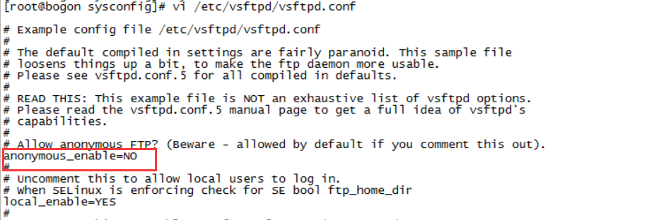

安装vsftpd组件
安装完后，有/etc/vsftpd/vsftpd.conf 文件，是vsftp的配置文件。
1
| [root@bogon ~]# yum -y install vsftpd
|
添加一个ftp用户
此用户就是用来登录ftp服务器用的,这样一个用户建完，可以用这个登录，记得用普通登录不要用匿名了。登录后默认的路径为 /home/ftpuser.
1
| [root@bogon ~]# useradd testuser --勿添加ftpuser、ftpusers等用户
|
给ftp用户添加密码
1
| [root@bogon ~]# passwd testuser
|
安装iptables
1 2 3 4 5 6
| [root@bogon ~]# systemctl stop firewalld --关闭防火墙 [root@bogon ~]# systemctl disable firewalld.service --禁止firewall开机启动 [root@bogon ~]# yum install iptables-services --安装或更新服务 [root@bogon ~]# systemctl start iptables.service --打开iptables [root@bogon ~]# systemctl enable iptables.service --设置防火墙开机启动
|
关闭SELINUX
1 2 3 4 5 6 7 8 9 10 11 12 13 14
| [root@bogon /]# vi /etc/selinux/config # This file controls the state of SELinux on the system. # SELINUX= can take one of these three values: # enforcing - SELinux security policy is enforced. # permissive - SELinux prints warnings instead of enforcing. # disabled - No SELinux policy is loaded. SELINUX=disabled # SELINUXTYPE= can take one of three two values: # targeted - Targeted processes are protected, # minimum - Modification of targeted policy. Only selected processes are protected. # mls - Multi Level Security protection. SELINUXTYPE=targeted
|
防火墙开启21端口
因为ftp默认的端口为21，而centos默认是没有开启的，所以要修改iptables文件
1 2 3 4 5 6 7 8 9 10 11 12 13 14 15 16 17 18 19 20 21 22 23 24 25 26 27 28 29 30 31
| [root@bogon ~]# vim /etc/sysconfig/iptables # sample configuration for iptables service # you can edit this manually or use system-config-firewall # please do not ask us to add additional ports/services to this default configuration *filter :INPUT ACCEPT [0:0] :FORWARD ACCEPT [0:0] :OUTPUT ACCEPT [0:0] # 允许已建立的或相关连的通行 -A INPUT -m state --state ESTABLISHED,RELATED -j ACCEPT #允许本地回环接口 -A INPUT -s 127.0.0.1 -d 127.0.0.1 -j ACCEPT #允许本机对外访问 -A OUTPUT -j ACCEPT # 允许访问SSH端口，如果端口修改了可以更改相应端口号 -A INPUT -p tcp --dport 22 -j ACCEPT #允许访问80（HTTP）端口 -A INPUT -p tcp --dport 80 -j ACCEPT #允许访问FTP端口：21、20 -A INPUT -p tcp --dport 21 -j ACCEPT -A INPUT -p tcp --dport 20 -j ACCEPT #允许访问161（SNMP）端口： -A INPUT -p udp --dport 161 -j ACCEPT #禁止其他未允许的规则访问 -A INPUT -j REJECT -A FORWARD -j REJECT COMMIT
|
重启iptables
1
| [root@bogon sysconfig]# service iptables restart
|
修改selinux
外网是可以访问上去了，可是发现没法返回目录（使用ftp的主动模式，被动模式还是无法访问），也上传不了，因为selinux作怪了。
修改selinux：
执行以下命令查看状态：
1
| [root@bogon ~]# getsebool -a | grep ftp
|
执行上面命令，再返回的结果看到两行都是off，代表，没有开启外网的访问,执行以下命令将其开启：
1 2
| [root@bogon sysconfig]# setsebool -P allow_ftpd_full_access on [root@bogon sysconfig]# setsebool -P ftp_home_dir on
|
关闭匿名访问
修改/etc/vsftpd/vsftpd.conf文件：

重启ftp服务：
1
| [root@bogon support-files]# service vsftpd restart
|